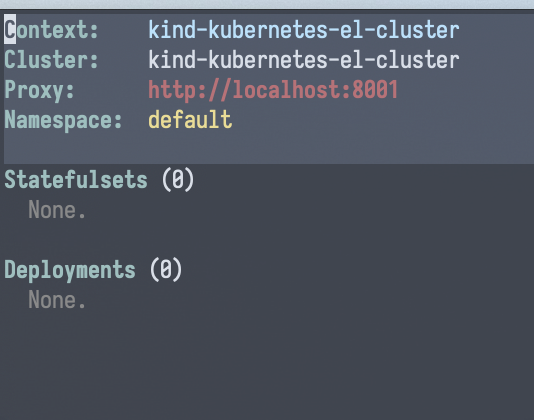
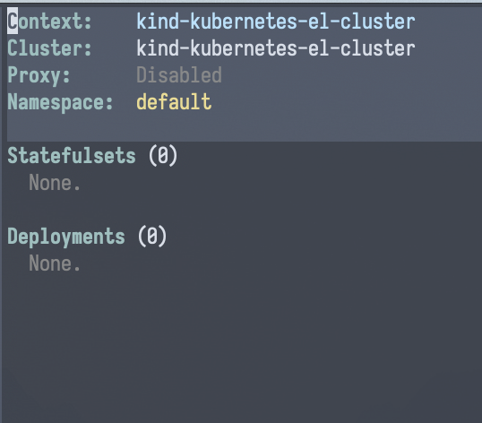

How-To
Tip
This page is structured loosely around the CRUD paradigm.
This page provides “recipes” around how to perform common tasks with
kubernetes-el. It can be considered an authoritive (if not necessarily
comprehensive) overview of all that is possible with the package.
Interacting with kubernetes-el
Enter the package
| Keybinding | Interactive function |
|---|---|
| N/A | M-x kubernetes-overview |
Quit the package
| Keybinding | Interactive function |
|---|---|
Q |
M-x kubernetes-kill-buffers-and-processes |
kubernetes-kill-buffers-and-processes (Q) will kill all buffers
associated with kubernetes-el, as well as terminate all associated
background processes, e.g. those for querying resources.
Create
Read
Changing contexts
| Keybinding | Interactive function |
|---|---|
C c |
M-x kubernetes-contexts-use-context |
Query CRDs
Not Yet Implemented
kubernetes-el is currently set up to only work with core resource kinds,
and a limited subset of those at that.
Work is currently in-progress to implement support for CRDs; see issue #69.
Changing namespace
| Keybinding | Interactive function |
|---|---|
c n |
M-x kubernetes-set-namespace |
Info
It is currently not possible to view resources for multiple/all namespaces. See issue #72 for details.
Update
Renaming contexts
| Keybinding | Interactive function |
|---|---|
C r |
kubernetes-contexts-rename |
Delete
TODO.
Connectivity
Start/terminate a proxy server
| Keybinding | Interactive function |
|---|---|
P P |
N/A |
The overview buffer will update to reflect the new status of the proxy server.


Port-forwarding
Not Yet Implemented
See issue #122.